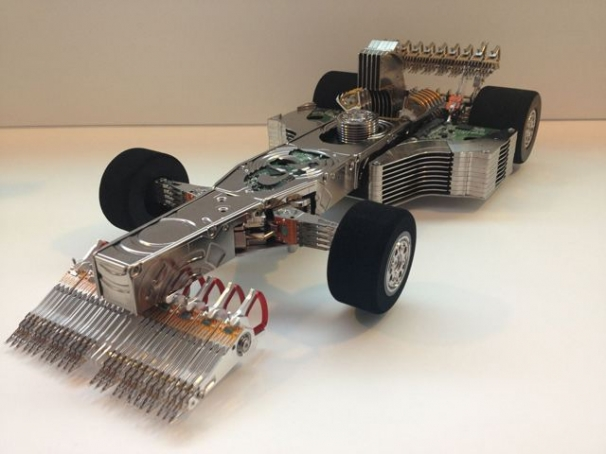
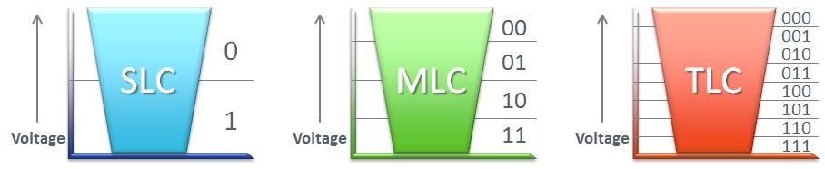

Описание
Твердотельные накопители также известные под названием SSD (Solid State Drive) - это устройства, предназначенные для хранения больших объемов данных посредством использования твердотельной памяти (как правило, flash). SSD-диск имитирует работу традиционного жёсткого диска (HDD) и успешно может его заменять. Термин «твердотельный» подразумевает, что устройство целиком полупроводниковое, а не электромеханическое, как HDD-диск.
История SSD-накопителей
Впервые твердотельные накопители на базе flash-памяти начали использоваться в 1995 году. 20 лет назад это были невероятно дорогостоящие устройства, ориентированные на использование в военной и космической отрасли. Практика показывала, что SSD-диски прекрасно справляются с хранением данных в условиях рекордно низких и экстремально высоких температур, сильных перегрузок и вибраций. Однако годы шли, цены на твердотельные накопители снижались. Это, в свою очередь, обеспечивало устройству проникновение на более типичные рынки, включая потребительский сектор. Уже в 2007 года SSD стали серийно применятся в некоторых моделях ноутбуков и субноутбуков. При этом совершенствовалось их производство: твердотельные накопители начали изготавливаться в популярных форм-факторах (1.8", 2.5", 3.5", PC Card) и с удобными интерфейсами.
Главные отличия SSD и HDD
| Параметры | SSD | HDD |
|---|---|---|
| Максимальная скорость чтения, КБ/с (в основе анализа - тест ATTO Disk benchmark) | 1552400 (выше в 6,76 раз) | 229432 |
| Максимальная скорость записи, КБ/с (в основе анализа - тест ATTO Disk benchmark) | 1406090 (выше в 6,29 раз) | 223231 |
| Время загрузки Windows | <10 секунд | >15 секунд |
| Доступные интерфейсы | SATA 6 Gb/s, SAS 2, SAS 3, PCI-e | SATA 6 Gb/s, SAS 2, SAS 3 |
| Ограничено ли количество циклов стирания/записи | ДА | НЕТ |
| Максимальная емкость | 1 Тб | 6 Тб |
Параметры выбора SSD
Прежде чем делать выбор в пользу того или иного твердотельного накопителя, стоит определить различия устройств. Итак, все SSD различаются по основным критериям:
"
Приобрести новые модели SSD-дисков промышленного исполнения Вы можете на ВТК СВЯЗЬ. Наши специалисты помогут сделать наиболее правильный выбор и подскажут основные особенности каждой из рассматриваемых моделей.
В случае, если заинтересовавший Вас SSD-диск в данный момент не размещен на сайте, мы предлагаем обратиться к менеджеру, чтобы уточнить возможность его приобретения под заказ. "
Производительность
На производительность устройства влияет контроллер flash-памяти, который лежит в основе SSD. Чем выше производительность контроллера, тем больший массив flash-памяти у устройства и тем выше скорость обмена данных с flash. В нашем ассортименте твердотельные накопители представлены со следующими типами контроллерами NAND (расположены в порядке снижения производительности):
Емкость
В интернет-магазине CONETEC.su представлены Enterprise SSD диски емкостью жесткого диска от 100 Гб до 3200 Гб. Широкий диапазон емкостей позволяет выбрать устройство, наиболее подходящее конкретным целям и задачам.
Интерфейс (пропускная способность)
В интернет-магазине CONETEC.su представлены Enterprise SSD диски емкостью жесткого диска от 100 Гб до 3200 Гб. Широкий диапазон емкостей позволяет выбрать устройство, наиболее подходящее конкретным целям и задачам.
Типы NAND-flash памяти
Применение SSD-дисков
С каждым годом SSD-накопители становятся все доступнее и уже в скором времени устройства смогут стать основным типом накопителей для ПК, смартфонов и планшетов. Этому есть несколько объяснений:
В настольных ПК SSD используются в качестве накопителя для операционной системы и приложений, критичных к скорости работы накопителя. Дополнительный жесткий диск большого объема используется в качестве хранилища.
В ноутбуках, как правило, применяется аналогичная схема, однако на рынке уже представлены модели только с SSD накопителем.
Преимущества SSD
Недостатки SSD